1. 증거와 범위
새 캡처를 불필요하게 만들지 않았다. 최신 production 실행 파일과 기존 최종 캡처의 SHA-256이 일치하므로, 그 28장을 현재 AS-IS로 다시 원본 크기 검수했다.
선택된 Cannon Focus 방향과 TO-BE 이미지
28장 캡처를 근거로 완료를 선언한 문서
같은 캡처를 사용한 전면 UX 문제 목록
실행 기준
builds/windows/PaintMountain.exe SHA-256: 7B82A1F2375A171520380050CFA5FB7E3D1623EA7BCBF8DCC294D99F856F3D38. 캡처 세트의 기록과 동일하다. AS-IS 이미지는 보정·크롭·합성하지 않은 전체 viewport다.
TO-BE 이미지의 지위
각 화면의 파란 테두리 이미지는 최신 AS-IS를 편집 기준으로 생성한 ImageGen 시각 목표다. Main Menu와 통합 Stage Select + Briefing은 v2를 유지한다. AIM은 v3의 세 대안을 비교하며, 아직 구현 확정안은 아니다. 정지 이미지는 animation과 terrain 준비 성능을 증명하지 않으며, 동작·상태 계약이 최종 권위다. 프롬프트는 imagegen-prompts.txt에 보존했다.
| 확인 범위 | 확인함 | 이 보고서가 증명하지 않는 것 |
|---|---|---|
| 화면 | Main Menu부터 Clear/Failure까지 11개 주요 상태, 동일한 640×360 상태, 후반 스테이지와 음수 점수 6개 | 스크린 리더 실제 낭독, 게임패드 전체 순회, 색 대비의 측정값 |
| 구현 | 현재 Theme, HUD layout, ScoreScale, BallQueue, ActionControl, 각 screen owner | 아직 구현되지 않은 TO-BE의 런타임 품질 |
| 외부 기준 | Nintendo/FuturLab의 paint 진행 피드백, Returnal의 시선 중심 HUD 원칙, bullet chart의 목표 비교, W3C/Xbox의 색·대비 기준, Godot Control/Container 지침 | 특정 게임 UI의 시각 복제, WCAG 또는 XAG 전체 준수 선언 |
2. 이전 refinement 보고서가 실패한 지점
문제는 구현자가 방향을 어긴 것만이 아니다. 보고서가 “좋은 말”을 선언한 뒤, 구현자가 판단해야 할 핵심 수치를 비워 두었다. 그 빈칸이 현재 화면의 흰 버튼, 텍스트 CTA, 뜬 설명, 어긋난 좌표로 채워졌다.
| 원래 선언 | 보고서 안의 모순/누락 | 현재 결과 | 이번에 닫는 계약 |
|---|---|---|---|
| “패널 없음” | 버튼 normal/hover/pressed의 면 색을 정하지 않았다. 흰 원형/사각 버튼이 TO-BE와 공유 SVG에 남았다. | 설정, 증감, 모드, 완료가 모두 흰 상자처럼 보인다. | 행동 normal은 투명. 흰 면은 정보 카드·설정 폼·확인 모달만 사용. |
| “아이콘 우선” | 아이콘 “우선”인지 아이콘 “전용”인지 불명확했다. 공유 SVG도 “다음/다시” 텍스트를 유지했다. | 플레이, 시작, 발사, 다음, 닫기가 큰 텍스트 버튼으로 구현됐다. | 동작 버튼의 visible text는 항상 빈 값. 접근성 이름과 tooltip은 유지. |
| “0–100 고정 수직축” | 완전한 범위를 보여 주는 것을 이해 가능성과 동일시했다. 목표 9–13 같은 좁은 구간과 R/G 색의 점수 역할을 읽는 순서를 정의하지 않았다. | 왼쪽 막대가 화면을 차지하지만 페인트 점수, 실제 칠한 면적, R/G 가중치의 관계를 설명하지 못한다. | AIM의 라이브 수직축을 폐기하고, 목표·면적·색 기여도 중 무엇을 먼저 읽을지 세 안으로 비교한다. 전체 범위 축은 결과에서만 사용한다. |
| “공 설명 한 곳” | 보고서 데모는 어두운 tooltip 박스를 썼지만, shared component surface와 padding을 잠그지 않았다. | 특수 공 설명이 하늘 위 투명 텍스트로 떠서 정보인지 배경인지 불명확하다. | 큐 아래에 흰 BallDetailCard. 296px 폭, 16px padding, queue 우측선과 동일 정렬. |
| “공유 컴포넌트” | 컴포넌트 내부 padding과 화면 외부 gap의 소유자를 나누지 않았다. | 44/48/52/56/58/62px 크기가 혼재하고, 중심선과 edge가 화면마다 다르다. | 컴포넌트는 내부 치수만, HudRootLayout/screen owner는 좌표만 소유. 8px grid와 두 hit-target 크기만 사용. |
| “compact density” | 축소 비율만 있고 정보 우선순위와 재배치 계약이 없다. | 640×360에서 거대한 CTA와 수직축이 월드를 압박하고 설정은 스크롤 상태를 설명하지 않는다. | compact는 별도 좌표 sheet. 행동은 40/48px, score UI는 선택한 위계를 유지하되 내용에 맞춰 축소하고 정보 카드는 280px 이내로 제한한다. |
“PASS” 판정이 틀린 이유
2026-08-21 보고서는 clipping, 중복 tooltip, 누락 glyph 같은 기계적 결함을 제거한 사실을 사람의 이해와 시각 완성도로 확장했다. 캡처가 “깨지지 않음”은 증명했지만 “읽힘, 정렬됨, 좋아 보임”은 증명하지 않았다. 이번 보고서는 그 둘을 분리한다.
3. 사용자 피드백을 반영한 확정 원칙
행동은 아이콘만
Play, Start, Fire, Finish, Back, Resume, Retry, Next, Close 등 동사는 버튼 안에 쓰지 않는다. 버튼은 실제 아이콘을 사용하고 localized accessibility name과 tooltip을 제공한다.
흰 버튼 면 제거
routine action의 normal state는 투명이다. hover/pressed/focus에만 비흰색 피드백을 준다. 한 화면의 주요 행동 하나만 파란 원형 면을 가진다.
흰 면은 정보에 사용
특수 공 설명, 설정 폼, 파괴적 행동 확인처럼 “읽고 판단해야 하는 내용”만 흰 정보 면을 쓴다. 정보 면은 hover/pressed 효과가 없어 버튼으로 오인되지 않는다.
AIM 수직 점수축 폐기
AIM에는 0–100 수직 막대를 표시하지 않는다. 현재 점수, 목표 구간, 실제 칠한 면적, R/G 면적·가중치는 선택한 위계 안에서 서로 다른 의미로 읽혀야 한다.
내부/외부 정렬 분리
컴포넌트는 icon centering과 padding만 소유한다. 화면 layout owner만 좌표, safe margin, group gap을 소유한다. screen script에서 자식의 임의 offset을 추가하지 않는다.
값은 텍스트 예외
stage number, angle/power 값, timer, score 같은 데이터는 텍스트로 남는다. 버튼의 동작명만 제거한다. 정보 텍스트와 클릭 면을 한 덩어리로 만들지 않는다.
4. 공유 UI 시스템 교정 사양
화면별 미세 조정 전에 이 계약을 먼저 구현해야 한다. 각 화면이 같은 실패를 다른 이름으로 반복하지 않게 하는 공통 기반이다.
4.1 치수와 간격
8pxbase spacing. 내부 gap과 screen gap 모두 8의 배수.
24 / 12standard / compact viewport safe margin.
44 / 40routine action hit target. 보이는 icon은 24 / 22.
56 / 48primary action hit target. 파란 원형 면과 28 / 26 icon.
8 / 16 / 24item / group / section 외부 간격.
16px정보 카드 내부 padding. 카드 radius 14px.
2pxkeyboard focus ring. 2px 밖 offset, 최소 3:1 대비 목표.
14pxcompact 본문 최소 크기. 핵심 값은 20px 이상.
4.2 버튼 상태 계약
| 종류 | Normal | Hover | Pressed | Focus | Disabled |
|---|---|---|---|---|---|
| Routine icon | 투명, navy icon | navy 10% 원형/rounded-square 면 | navy 18% 면 | blue 2px ring | 면 없음, icon 38% |
| Primary icon | blue 원형 면, 흰 icon | blue + 8% 밝기 | blue − 12% 밝기 | 밝은 외곽 ring + 기존 면 | blue 28%, icon 55% |
| Selected mode | blue 14% 면 + blue icon | blue 20% 면 | blue 24% 면 | blue 2px ring | 해당 없음 |
| Destructive | 투명, red icon | red 10% 면 | red 18% 면 | red/blue 이중 채널 금지, blue focus ring 유지 | red 32% |
아이콘 전용의 접근성 보완
모든 action은 실제 아이콘 asset과 localized accessibility_name을 가진다. 일반 화면은 같은 문구의 tooltip을 사용한다. Main Menu는 tooltip 대신 아이콘 오른쪽의 label reveal을 hover와 keyboard focus에 동일하게 사용하며 둘을 중복 표시하지 않는다. 아이콘 의미를 색 하나에만 의존하지 않는다.
4.3 흰 정보 면 사용 규칙
허용: BallDetailCard
특수 공의 순서, 종류, 색 역할, 행동을 읽는 카드. warm white 96%, navy text, 14px radius, 16px padding, queue에 직접 부착.
허용: Settings/Confirmation
여러 값을 읽고 바꾸는 설정 sheet와 파괴적 행동 확인 modal. 한 화면에 한 containment level만 둔다.
금지: routine action
설정 gear, +/- stepper, Finish, camera mode, Back, Return, secondary result action의 normal state에 흰 면을 쓰지 않는다.
4.4 AIM ScoreStatus 후보와 ScoreScale 역할 분리
ScoreStatus — AIM 공통 계약
- 필수 값은 페인트 점수·목표 구간, 칠한 면적, 빨강/초록 면적과 weight, 두 색 필수 여부다.
- 표시 순서는 04 AIM의 세 안처럼 목표 우선, 면적 우선, 기여도 우선으로 달라질 수 있다. 현재 권장은 목표 우선이다.
- 페인트 점수는
R% × R weight + G% × G weight. 칠한 면적은 가중치와 무관하게R% + G%. - 가중치 copy는 더함 +1, 뺌 −1, 점수 제외 0으로 stage data에 맞춰 바꾼다.
- 흰 card와 0/25/50/75/100 수직 track을 사용하지 않는다. 배경 대비가 필요하면 좌측 edge scrim만 사용한다.
- standard x48, compact x12의 safe edge를 유지하고 내용 변화로 block 폭과 baseline이 움직이지 않게 한다.
- 음수와 100 초과 값을 clamp하지 않고 부호를 그대로 표시한다.
기존 ScoreScale — 결과 전용
- 가로 result summary preset만 유지한다. 라이브 vertical preset과 독립 Briefing preset은 제거한다.
- 현재값과 목표 구간 label을 track 위에 직접 표시한다.
- 좁은 target band는 최소 2px 표시 + 별도 label/leader로 의미를 보존한다.
- Stage Select + Briefing은 scale 대신 목표·R/G 가중치·공 수·필수 공을 terrain 위 한 줄 rule summary로 표시한다.
4.5 BallQueue 정보 구조
| 요소 | Standard | Compact | 정렬 계약 |
|---|---|---|---|
| 현재 공 token | 44×44 | 40×40 | queue 우측선 기준, 다음 공과 8px gap |
| 다음 공 token | 40×40 | 40×40 | 모든 icon center 동일 y |
| BallDetailCard | 296px 폭, 최소 88px 높이 | 최대 280px 폭, 내용에 따른 높이 | 선택 token 아래 12px, queue 우측선과 card 우측선 일치 |
| Card copy | title 16px/600, body 14px/500 | title 16px, body 14px | 좌측 정렬, line-height 1.45, outline text 금지 |
4.6 정렬 소유권
| 소유자 | 소유하는 것 | 소유하지 않는 것 |
|---|---|---|
paint_mountain_theme.tres | color, type, StyleBox, focus, icon state | 화면 좌표와 screen-specific width |
ActionControl, ScoreStatus, BallQueue | 내부 padding, icon center, min size, content layout | viewport anchor와 screen gap |
HudRootLayout | HUD safe margin, rect, group gap, standard/compact reflow | 컴포넌트 내부 자식 offset |
| 각 screen owner | 그 화면만의 anchor group과 information hierarchy | shared button/tooltip/score 스타일 복제 |
02
Stage Select + Briefing
두 화면을 하나로 합친다. 선택한 stage의 실제 하늘·땅·지형을 바로 보여 주고, stage 규칙과 공 queue를 같은 화면에서 확인한 뒤 AIM으로 들어간다.

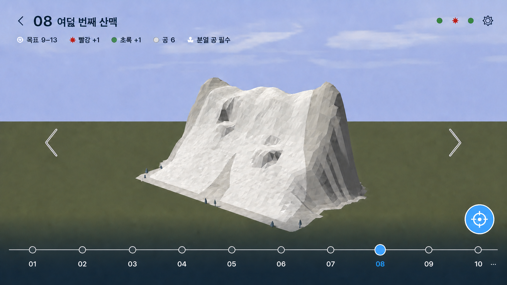
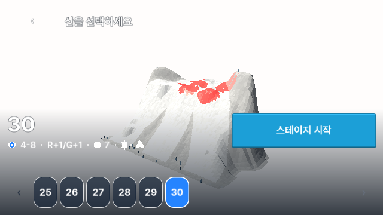
정확한 수정
- 흰 빈 배경과 별도 Briefing route를 제거한다. 선택 stage의 실제 sky, ground, terrain, dressing을 같은 renderer로 표시한다.
- terrain 양옆의 투명
</>icon, rail node click, rail horizontal drag 세 입력이 같은 selection action을 호출한다. - rule summary는 “목표 · 빨강/초록 가중치 · 공 수 · 필수 특수 공”, 우상단은 실제 queue 순서로 표시한다.
- 우하단 파란 aim icon은 선택된 stage artifact가 준비된 경우에만 활성화하고 바로 AIM으로 진입한다.
정렬·성능 계약
- terrain arrow center x56/1224, y360. rail x24..1256, bottom safe 24, visible node gap은 균등 분배한다.
- rail은 전폭이지만 30개를 억지로 압축하지 않는다. 01–10 단위의 연속 window를 보여 주고 drag 시 선택 stage가 가능한 한 중앙에 온다.
- 기존
StageRuntimePreparer의 3개 LRU cache를 선택/이전/다음 stage에 사용한다. 준비 전에는 직전 terrain을 유지하고 blank frame을 만들지 않는다. - drag 중 매 pixel마다 terrain을 만들지 않는다. snap된 selection만 latest-wins로 요청하고, artifact ready 뒤에만 짧은 crossfade로 교체한다.
소유 파일
03
Standalone Briefing — 제거
이 AS-IS는 폐기할 중간 상태의 증거로만 남긴다. terrain inspection, stage 규칙, queue, AIM 진입은 모두 02 Stage Select + Briefing이 소유한다.
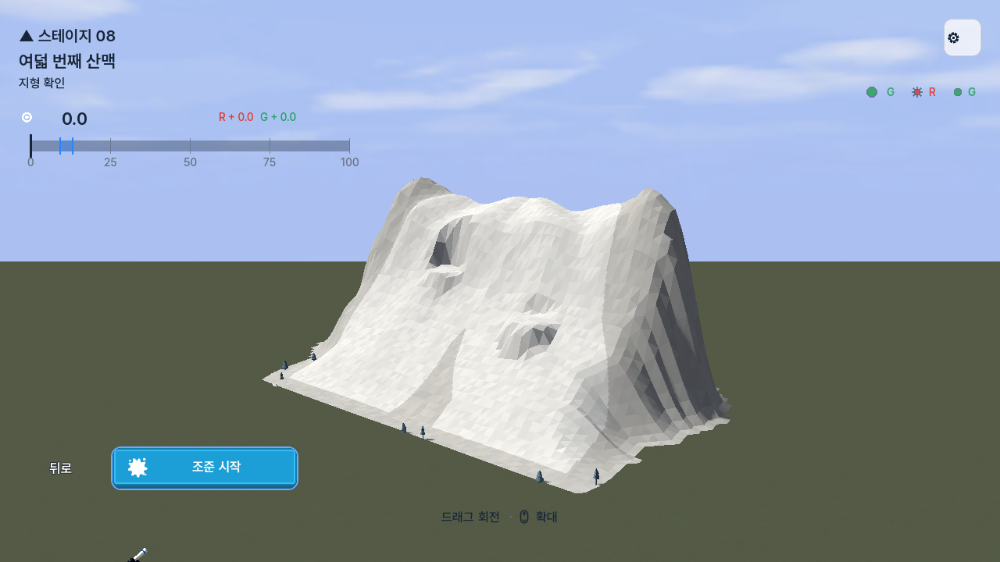
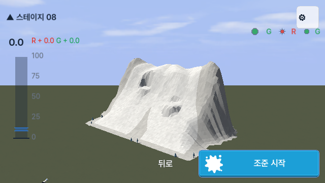
정확한 수정
- Stage Start 뒤에 별도
BRIEFINGUI를 다시 보여 주지 않는다. - 02 화면에서 준비 완료된 artifact와 선택 정보를 그대로 넘기고 AIM camera/state로 전환한다.
- 중복 Back/Start/Settings/ScoreScale footprint를 제거한다.
- 게임 규칙상 run clock이 AIM 전까지 시작되지 않는 기존 보장은 유지한다.
전환 계약
- Stage Select에서 AIM icon을 누르면 terrain 재생성이나 흰 flash 없이 같은 world에서 camera만 이동한다.
- Back은 Stage Select 자체에서 Main Menu로 이동한다. AIM에서 Stages를 선택하면 통합 화면으로 돌아온다.
- 키보드/gamepad focus는 선택 stage node → AIM icon 순서로 끝난다.
소유 파일
04
Aim · score UI 3안
조준, trajectory, queue, 상단 status, 하단 angle/fire/power는 건드리지 않는다. 왼쪽 HUD만 “지금 무엇을 판단해야 하는가”에 따라 세 가지 정보 위계로 비교한다.
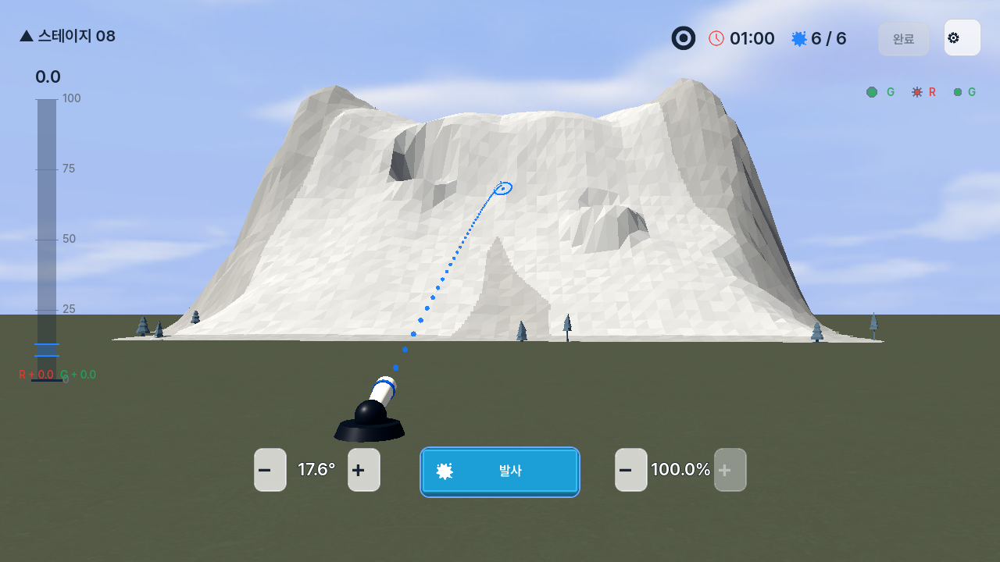
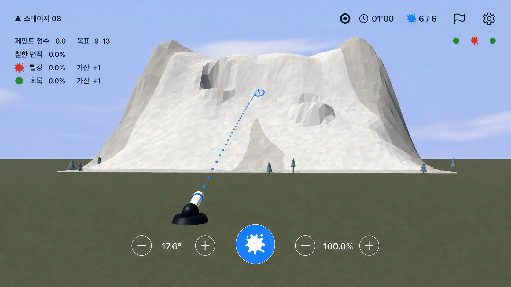

권장: 1안 · 목표 우선
이 게임의 AIM에서 가장 급한 질문은 “다음 발로 목표 구간에 들어가는가”다. 1안은 현재 점수, 목표 9–13, 목표까지 남은 양을 한 덩어리로 읽게 하고, 칠한 면적과 빨강·초록의 역할은 바로 아래에 보조 정보로 둔다. 정보량을 줄이지 않고 의사결정 순서만 명확하게 만든다.
레퍼런스에서 가져온 원칙
시각 형태를 복사하지 않고, 각 사례가 해결한 정보 문제만 AIM에 적용했다.
| 레퍼런스 | 확인한 원칙 | Paint Mountain 적용 |
|---|---|---|
| Nintendo · Splatoon 3 gameplay | 승패 기준을 “자기 색으로 더 넓게 덮기”라는 즉시 이해되는 물리 상태로 연결한다. | 빨강·초록은 작은 표가 아니라 splat/circle shape와 면적 수치로 지면 상태에 직접 대응한다. |
| FuturLab · PowerWash Simulator progress | 현재 겨냥한 표면의 작업 진척을 progress bar와 percentage로 바로 보여 준다. | “칠한 면적”은 점수와 분리된 물리 진행률로 둔다. 2안은 이 원칙을 가장 강하게 적용한다. |
| PlayStation · Returnal UX | 즉시 필요한 정보는 시선 중심에, 매 순간 필요하지 않은 정보는 주변 HUD에 둔다. | 왼쪽 주변부에는 계산표 전체가 아니라 다음 샷 판단에 필요한 대표값 하나를 가장 크게 둔다. |
| Google · Bullet chart | 실제값을 목표 범위와 같은 축에서 비교하면 도달 여부와 부족량을 빠르게 읽을 수 있다. | 1안의 짧은 target-window rail은 전체 0–100 축이 아니라 현재값과 9–13 구간만 비교한다. |
| W3C · Use of Color | 색만으로 상태나 의미를 전달하지 않는다. | 빨강은 splat, 초록은 circle, 각 weight는 부호와 텍스트를 함께 표시한다. |
| Xbox XAG 102 · XAG 103 | 변하는 월드 위 HUD에는 충분한 대비와 색 외의 의미 단서가 필요하다. | 흰 button/card를 만들지 않고, 필요한 경우 화면 가장자리의 국소 contrast scrim만 사용한다. |
| 안 | 첫 1초에 읽는 것 | 강점 | 약점 / 사용 조건 |
|---|---|---|---|
| 1 · 목표 우선 | “0.0, 목표는 9–13, 9.0 부족” | 샷 계획과 clear 판정을 가장 빨리 연결한다. 목표 구간·현재값·overflow를 한 시선에 처리한다. | 작은 viewport에서는 rail 눈금을 0/current/target 세 지점만 남겨야 한다. |
| 2 · 면적 우선 | “현재 0.0% 칠했다” | 실제 산이 얼마나 칠해졌는지 가장 직관적이다. 점수와 물리 면적의 차이를 학습시키기 쉽다. | stage 목표가 면적 자체가 아닐 때 score 판단이 한 박자 늦다. 0% rail은 반드시 중립색 빈 track이어야 한다. |
| 3 · 기여도 우선 | “빨강/초록이 각각 점수에 얼마를 더한다” | +1/−1/0 weight, 음수 점수, 100 초과 점수까지 오해 없이 설명한다. | 산술 기호가 많아 반복 플레이에서는 과하다. 규칙이 복잡한 stage나 학습 단계에 적합하다. |
고정 범위
- 왼쪽 score 영역만 교체한다. mountain, cannon, trajectory, queue, settings, timer, ball count, angle/fire/power의 위치·크기·색은 그대로 둔다.
- 흰 card나 button-like surface를 만들지 않는다. 배경 대비가 부족할 때만 좌측 edge에서 투명해지는 navy scrim을 사용한다.
- 선택 전까지 세 안 모두 탐색안이며 canonical design spec을 바꾸지 않는다.
공통 의미·상태 계약
- “칠한 면적”은 항상 R%+G%. “페인트 점수”는 R%×weight + G%×weight이다.
- 빨강은 splat, 초록은 circle을 유지하고 weight는
더함 +1,뺌 −1,점수 제외 0으로 표시한다. - 음수와 100 초과 score를 clamp하지 않는다. 양 색 필수 조건은 별도 badge/문구로 남긴다.
- 값이 변할 때 숫자만 갱신하고 block의 폭과 baseline은 움직이지 않는다.
소유 파일
05
Special Ball Detail
현재 특수 공 설명은 하늘에 outline text로 떠 있다. 읽어야 하는 정보에 containment가 없고, 오히려 정보가 아닌 설정/증감 버튼에 흰 면을 쓴다.
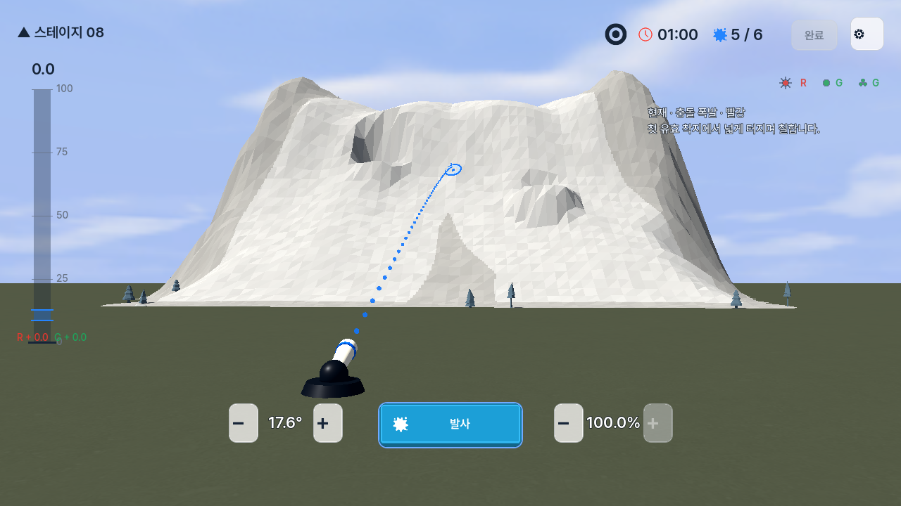
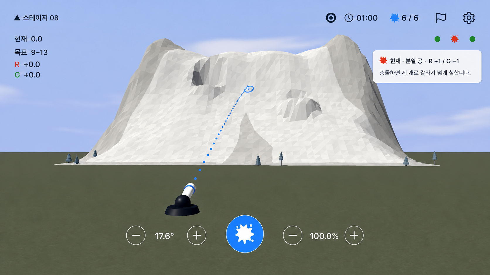

정확한 수정
BallQueueDescription: Label을BallDetailCard로 교체.- warm-white 96% 면, navy text, no outline, 16px padding.
- 1행: 현재/다음 · 종류 · R/G. 2행: 행동 설명.
- hover/focus/press가 같은 카드 사용. press는 고정, Escape는 닫기.
정렬 좌표
- standard card x960/y148/w296/min-h88.
- compact card right=628/top=104/max-w280.
- token bottom에서 12px, queue와 우측선 정확히 일치.
- 카드는 trigger와 trajectory를 덮지 않도록 왼쪽으로만 확장.
소유 파일
06
Map
Map에서도 해석 어려운 수직 score가 계속 남고, 선택된 camera mode가 흰 버튼 면으로 보인다. 월드를 넓게 보는 상태인데 HUD가 같은 면적을 고정 점유한다.
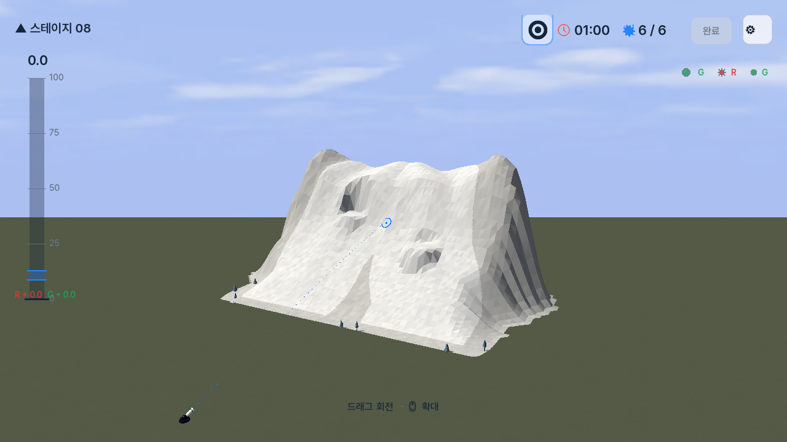
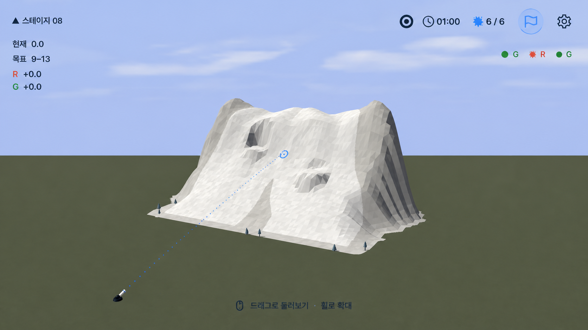
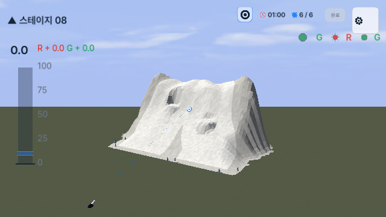
정확한 수정
- 이번 AIM v3 연구 범위가 아니다. 기존 승인된 Map ScoreStatus를 유지한다.
- 선택된 map mode는 blue 14% 면 + blue icon, white normal 금지.
- aim steppers와 Fire는 완전히 숨기고 빈 footprint를 남기지 않는다.
- 하단 도움말은 non-interactive info이므로 icon + 짧은 text 허용.
정렬 좌표
- ScoreStatus는 기존 Map rect를 유지하고 AIM 후보 선택으로 자동 변경하지 않는다.
- mode icon과 run status는 top-right row center 공유.
- context hint center x=640/320, bottom=696/348.
소유 파일
07
Shot Follow
비행 중에도 왼쪽 수직축이 그대로 남아 시선이 공과 점수 사이에서 분산된다. 우하단 Return은 파란 사각형으로 별도 시스템처럼 보인다.

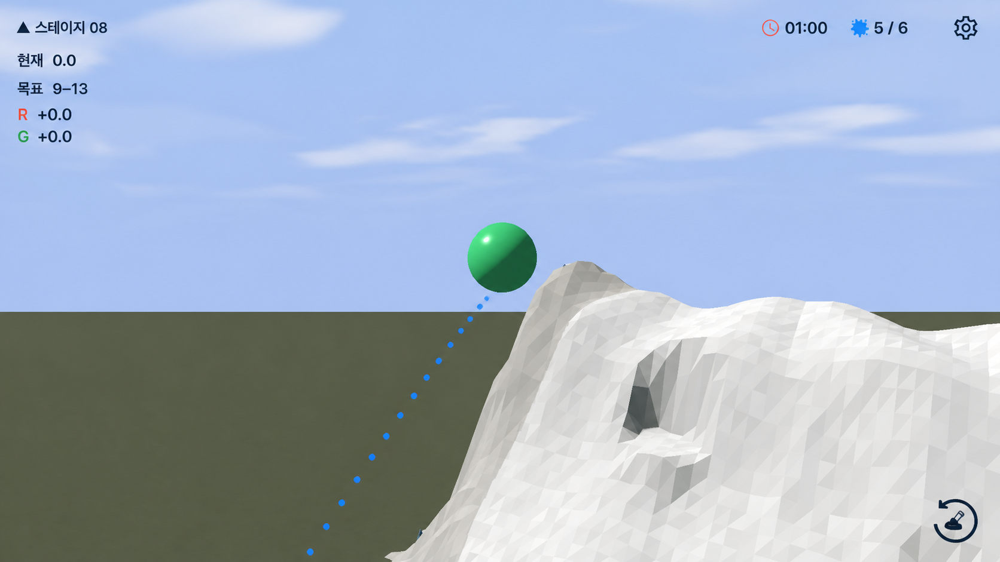
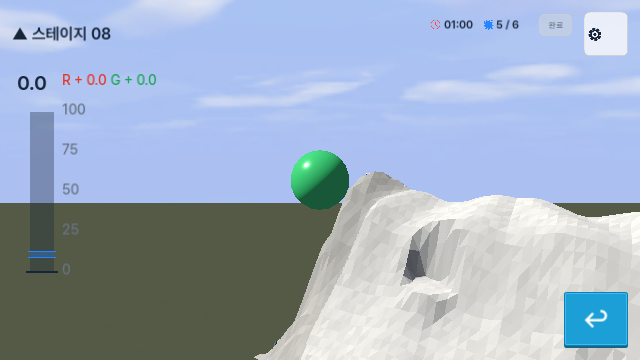
정확한 수정
- 이번 AIM v3 연구 범위가 아니다. 기존 승인된 Follow ScoreStatus를 유지한다.
- BallQueue와 aim controls는 숨김.
- Return은 44/40px 투명 arrow-back-to-cannon icon.
- 파란 면은 Fire/Resume/Next 같은 즉시 primary에만 남긴다.
정렬 좌표
- ScoreStatus는 기존 Follow rect를 유지하고 AIM 후보 선택으로 자동 변경하지 않는다.
- Return right/bottom safe edge, 44×44/40×40.
- Top status와 settings는 같은 row를 유지.
소유 파일
08
Pause
현재는 흰 panel 안에 파란 full-width button과 plain text actions가 섞여 있다. 버튼인지 텍스트인지 상태가 달라 보이고, 모든 행동이 같은 세로 폭을 강제로 차지한다.
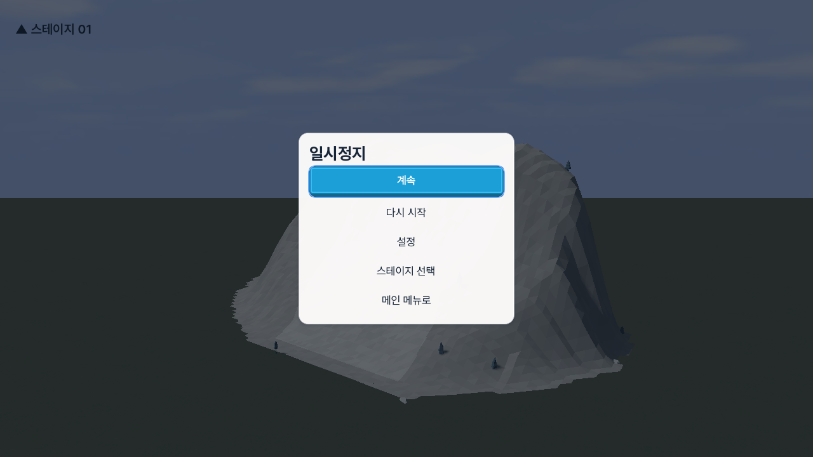
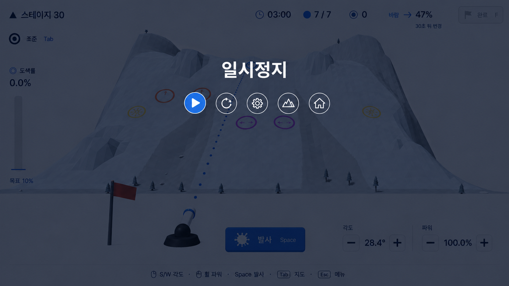
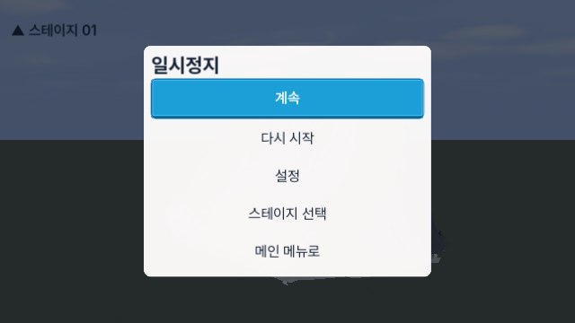
정확한 수정
- 흰 pause panel 제거. 46% navy scrim 위에 title과 icon action rail만 둔다.
- Resume 56/48px primary play icon.
- Restart, Settings, Stages, Main Menu는 44/40px routine icons.
- 파괴적/이탈 action은 tooltip과 confirmation 필요 여부를 별도 적용.
정렬 좌표
- standard title center y244, action center y326.
- compact title center y98, action center y190.
- routine gap 16/8, 전체 rail viewport center.
소유 파일
09
Settings
설정은 흰 면을 써도 되는 화면이다. 문제는 정보 surface가 아니라 하단의 큰 Close 텍스트 버튼, 열 간 기준선 불일치, compact에서 action이 scroll 내용처럼 움직이는 점이다.

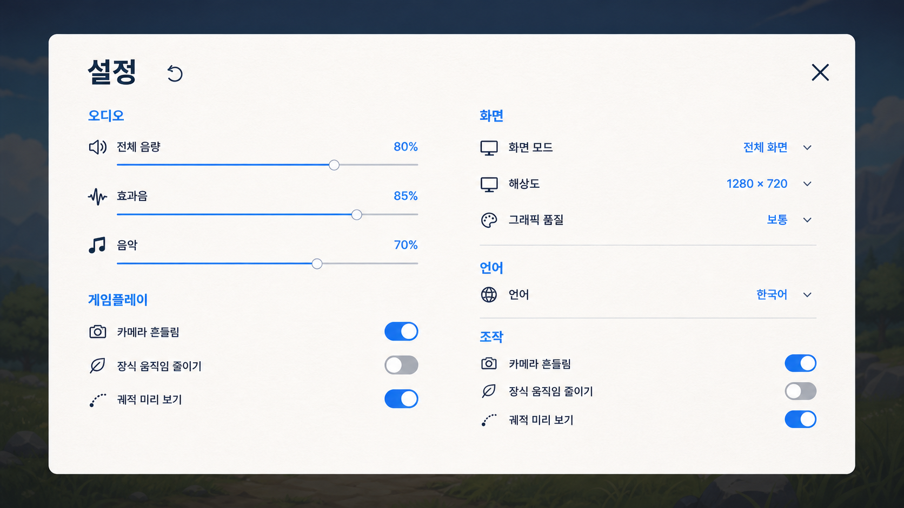
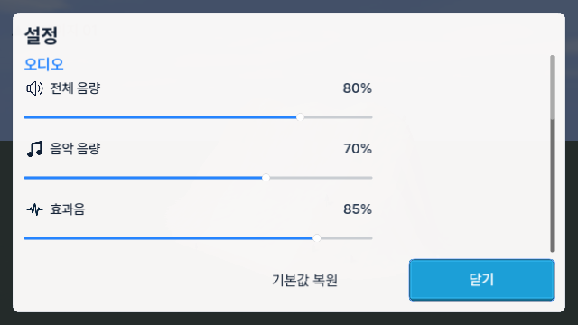
정확한 수정
- 흰 form sheet는 유지하되 screen당 하나만 사용.
- Close는 top-right 44/40px 투명 X icon, Defaults는 undo icon.
- slider/value/switch는 8px baseline grid로 정렬.
- compact Close는 viewport에 고정하고 설정 content만 scroll.
정렬 좌표
- standard sheet inset 28, inner padding 28, column gap 48.
- column heading, row label, control start x를 각 열에서 동일하게 유지.
- compact sheet inset 12, inner 16, 단일 column, row gap 16.
소유 파일
10
Clear Result
현재 hard vertical split과 파란 Next 텍스트 slab가 결과의 감정과 산을 분리한다. 점수, 목표, R/G, 메타, actions가 서로 다른 좌측선을 사용한다.

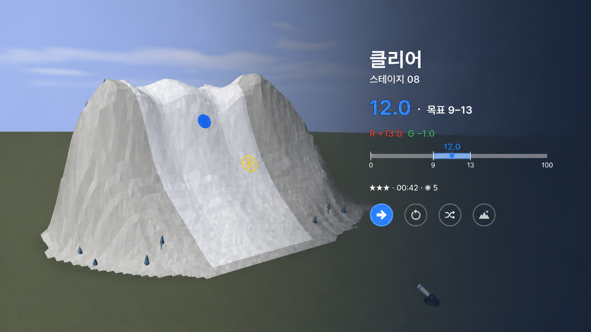

정확한 수정
- hard split을 오른쪽 navy gradient scrim으로 바꿔 산과 결과를 연결.
- Next 56/48px primary arrow icon. Same/New/Stages는 routine icons.
- 결과 copy와 ScoreScale은 x 기준선 하나만 사용.
- 점수와 목표 문장을 먼저, 메타와 action을 그 아래 배치.
정렬 좌표
- standard content x784, right=1256, top=112.
- ScoreScale x784/y272/w432.
- action rail x808/y408, item gap 16.
- compact content inset 24, summary width viewport−48, action bottom 24.
소유 파일
11
Failure Result
Failure가 Clear와 다른 시스템처럼 보이면 안 된다. 현재는 primary text가 “같은 배치”로 바뀌고 다른 actions가 평문으로 남아, 재시도 선택의 구조가 약하다.
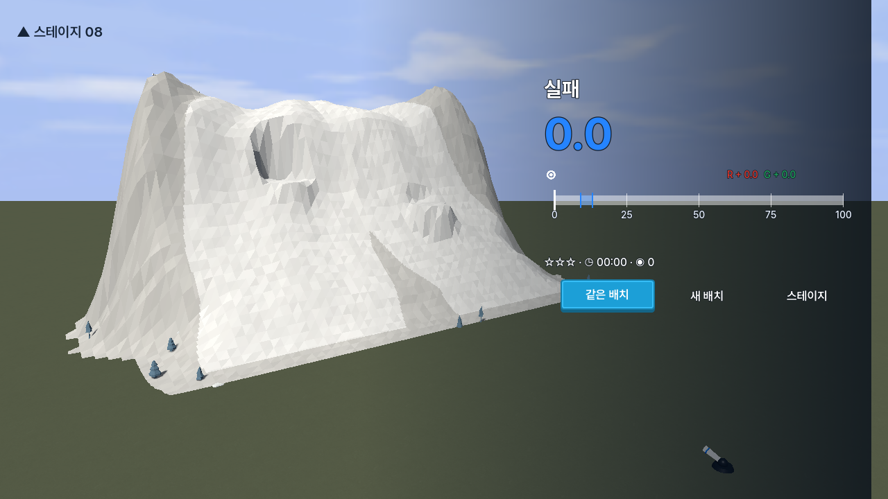
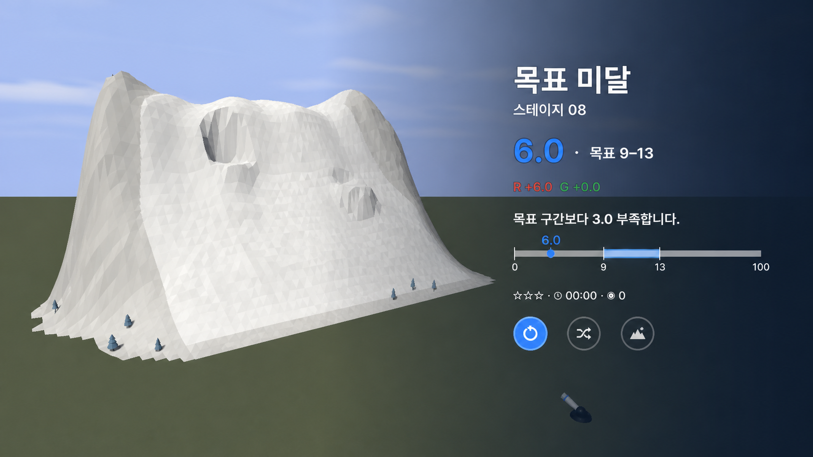
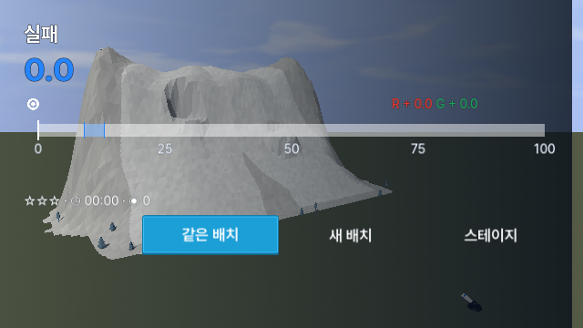
정확한 수정
- Clear와 동일한 result shell, 좌표, typography 사용.
- Same Deal을 primary retry icon으로 지정.
- New Deal은 shuffle icon, Stages는 mountain/stage icon.
- 실패 이유와 목표 차이를 점수 바로 아래 한 문장으로 표시.
정렬 좌표
- Clear와 완전히 동일한 content/track/action anchors.
- action 수가 바뀌어도 첫 item이 움직이지 않고 rail 폭만 확장.
- 음수 score는 minus sign을 포함해 clamp 없이 표시.
소유 파일
5. 후반/경계 AS-IS 증거
화면별 사양이 Stage 08에만 맞아서는 안 된다. 아래 6장은 target band, 공 종류, stage 폭, 음수 점수가 달라도 같은 문제와 같은 교정 규칙이 적용됨을 보여 준다.
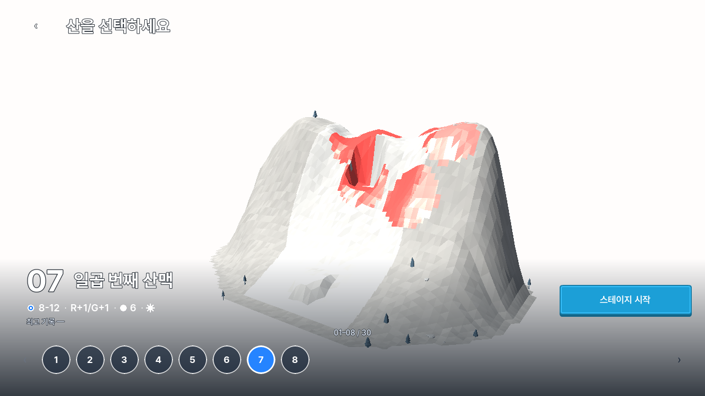
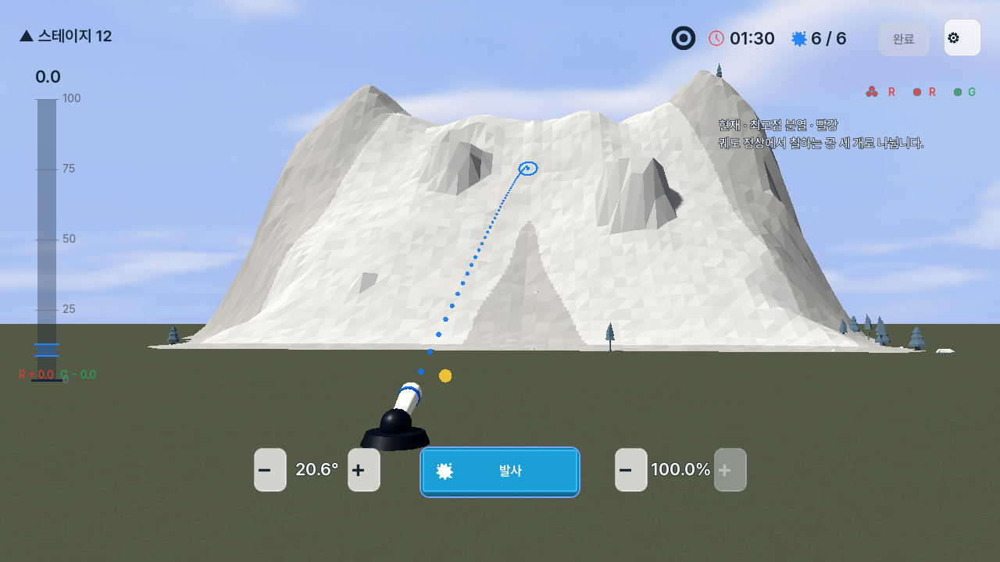
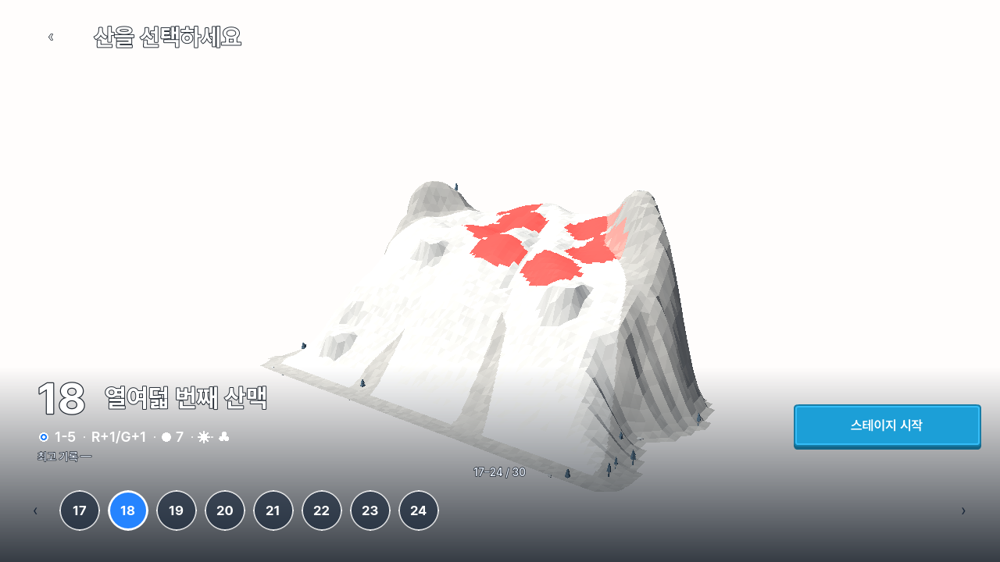
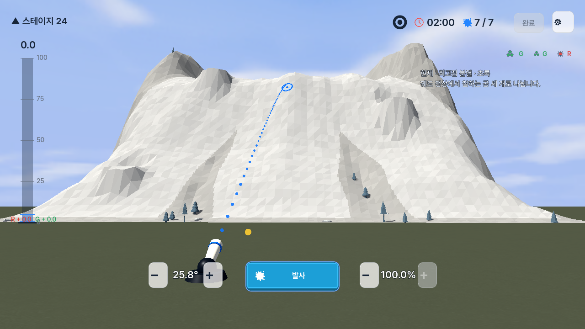

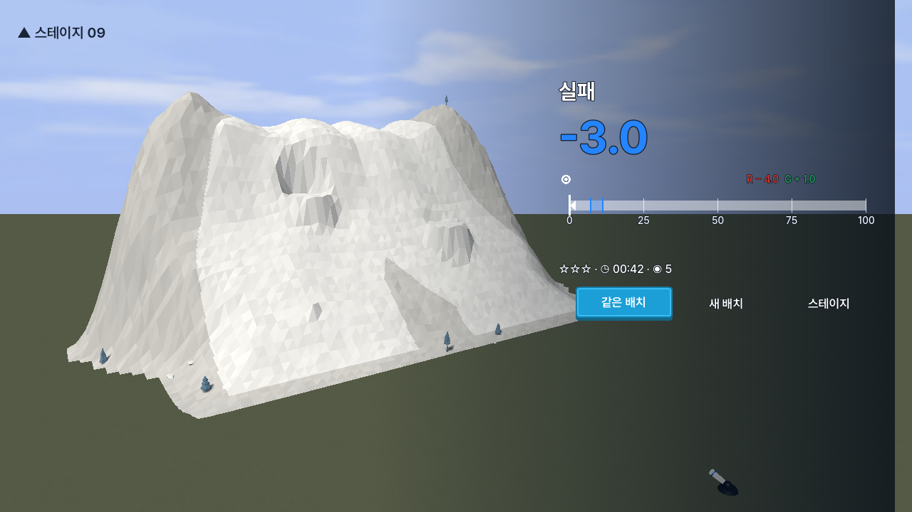
6. 정확한 구현 순서
화면을 하나씩 꾸미면 shared theme가 다시 분기한다. 아래 순서대로 공통 계약을 먼저 닫고, 그 위에서 화면을 이식해야 한다.
| 순서 | 변경 | 주요 소유자 | 정지 조건 |
|---|---|---|---|
| 1 | ActionControl을 icon-only contract로 전환. Routine/Primary/Selected/Destructive theme variation 추가. 기존 white ButtonNormal을 icon action에서 제거. | theme, action_control, icon assets | 어떤 화면에도 visible verb text가 든 action button이 없음. |
| 2 | 사용자가 선택한 AIM ScoreStatus 한 안만 구현. AIM의 ScoreScale.VERTICAL_LIVE를 제거하고 점수, 총 칠한 면적, R/G 면적, stage weight를 별도 값으로 바인딩. Map/Follow는 이번 단계에서 변경하지 않음. | score_status, score_scale, hud_controller | AIM에 vertical axis가 없고 점수와 면적, 더함/뺌/제외 의미가 정확하며 Map/Follow에 회귀가 없음. |
| 3 | BallDetailCard 구현. Queue token/card anchor와 hover/focus/press/Escape policy 정리. | ball_queue, ball_queue_token, theme | 설명이 white card 한 곳에만 보이고 trigger/card 이동이 끊기지 않음. |
| 4 | HudRootLayout을 8px grid coordinate sheet로 재작성. Aim, Map, Follow를 이식하고 독립 Briefing HUD를 제거. | hud_root_layout, aim_controls, run_status | 1280×720/640×360에서 좌우/상하 기준선과 center가 수치대로 일치. |
| 5 | Main Menu hover reveal을 추가하고 Stage Select에 terrain preview, Briefing rules, 3-way navigation을 통합. Pause, Settings, Result는 승인된 v1 방향 그대로 이식. | 각 screen owner, stage_runtime_preparer, app_root, result_panel | Stage Select→AIM 사이 중복 화면·terrain rebuild·blank frame이 없고 screen-local style 복제가 없음. |
| 6 | production build에서 10개 독립 target state capture sweep. Main hover/focus animation, stage arrow/click/drag, terrain frame pacing, compact overflow를 별도 기록. | project capture workflow | 아래 acceptance matrix 전체 통과. |
아이콘 asset 요구 목록
현재 저장소에는 settings, target, plus/minus, paint splash 등 일부만 있다. 구현 전 아래 의미를 하나의 실제 24px/28px monochrome asset family로 확보한다. 문자 glyph, emoji, CSS 도형, screen-local handcrafted icon은 사용하지 않는다.
Navigation
play, back, stage/mountain, home, close, quit/power
Gameplay
fire/paint, finish/check, map/target, return-to-cannon, settings
Result
next, retry, same-deal, shuffle/new-deal, defaults/undo
7. 수용 기준
| 영역 | 반드시 통과할 조건 | 증거 |
|---|---|---|
| 버튼 | 동작 버튼 내부 visible text 0개. Main Menu hover/focus label은 버튼 오른쪽 별도 layer에만 1개. routine normal의 white surface 0개. | component contract test + 10개 독립 화면 capture |
| 점수 | AIM의 선택된 한 안에 vertical 축이 없고 페인트 점수, 목표, 칠한 면적, R/G 면적과 더함·뺌·제외가 구분된다. 음수/100+를 보존하며 Map/Follow는 기존 승인 상태에서 변하지 않는다. | Stage 08, Stage 09 음수, weight 0, 100+ fixture + Map/Follow regression capture |
| Stage flow | Stage Select와 Briefing은 한 화면. arrow/click/drag가 같은 selection을 만들고 AIM 진입 전후 terrain blank/rebuild가 없음. | production frame-time trace + interaction recording |
| 특수 공 | 설명은 큐에 붙은 흰 card 1개. hover/focus/press 동일 copy, Escape dismiss, trigger/card hover continuity. | Stage 08/12/24 standard + compact |
| 정렬 | safe margin 24/12, routine 44/40, primary 56/48. 같은 row의 중심선 오차 1px 이하, 공유 edge 오차 1px 이하. | numeric layout test + full viewport capture |
| focus | 모든 icon action에 명확한 2px focus ring. focus가 overlay에 가려지지 않고 순서가 시각 순서와 일치. | keyboard/gamepad traversal recording or screenshot sequence |
| overflow | 1280×720, 640×360에서 clipping/overlap 없음. compact Settings는 action 고정 + content만 scroll. | production build captures |
| 시각 위계 | 한 화면에 filled blue primary 최대 1개. white information containment 최대 1개, Ball detail open 시에만 예외적으로 1개 추가. | visual audit checklist |
완료 판정 문구
“겹치지 않는다”만으로 PASS 처리하지 않는다. 화면별 AS-IS와 동일 viewport의 TO-BE를 나란히 놓고, 위 수치와 사람이 읽는 순서를 모두 검수해야 한다. 마지막 결과에는 버튼 면, score 이해, 특수 공 card, 내부/외부 정렬을 각각 별도 판정한다.
참조한 외부 기준
- Nintendo · Splatoon 3 gameplay — 색과 실제 territory 상태를 직접 연결하는 paint feedback의 참고.
- FuturLab · PowerWash Simulator progress — 겨냥한 표면의 진행률과 percentage를 즉시 표시하는 기준.
- PlayStation · Returnal UX — 즉시 필요한 정보와 주변부 HUD를 분리하는 gameplay-first 원칙.
- Google · Bullet chart — actual value와 target band를 한 축에서 비교하는 AIM 1안의 근거.
- W3C · Use of Color — 색 이외의 shape, label, sign을 함께 쓰는 기준.
- W3C · Target Size (Enhanced) — 자주 쓰는 custom target의 44×44 기준을 참고했다.
- W3C · Content on Hover or Focus — 특수 공 card의 dismiss/hover/persistence 계약에 반영했다.
- W3C · WCAG 2.2 focus additions — 2px perimeter와 focus 가시성의 근거로 사용했다.
- Xbox Accessibility Guideline 113 · UI focus — game UI focus가 분명해야 한다는 기준을 적용했다.
- Xbox Accessibility Guideline 114 · UI context — icon-only action에도 사전 맥락과 consistent labeling이 필요하다는 제한을 반영했다.
- Xbox Accessibility Guideline 102 · Contrast — 월드 위 텍스트와 정보 면의 대비 필요성을 반영했다.
- Xbox Accessibility Guideline 103 · Use of Color — label과 shape로 색 의미를 보강했다.
- Godot stable · Custom GUI controls — minimum size와 focus drawing 계약의 구현 근거.
- Godot · Using Containers — container가 자식 layout을 소유한다는 책임 경계의 참고. 구현 시 프로젝트 고정 Godot 4.7.1 문서와 다시 대조한다.